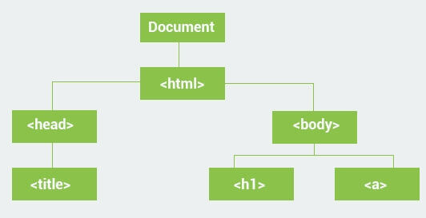
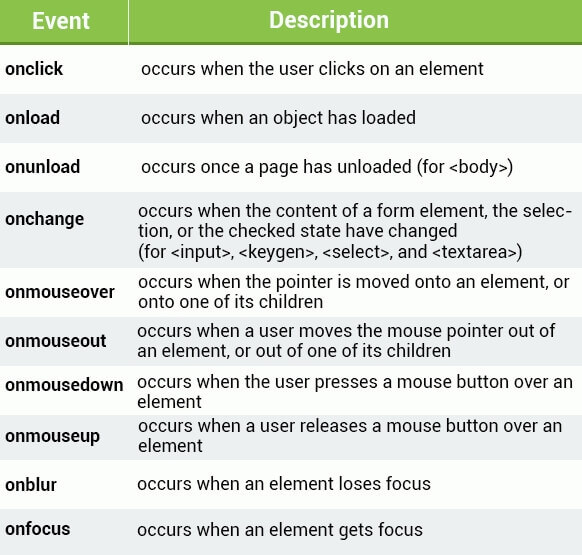
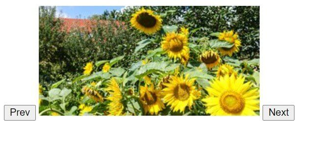

这篇文章上次修改于 746 天前，可能其部分内容已经发生变化，如有疑问可询问作者。
当你打开一个网页，html 页面会被加载和渲染到屏幕上。为了完成这个过程，浏览器会建立这个页面的 Document Object Model 模型。也就是一个指向页面逻辑架构的 object。
一个页面的 DOM 可以被表示为一些嵌套的 boxes：
JavaScript 能够用来操作 DOM，动态的添加、删除、修改其中的元素。
DOM tree
DOM 将一个 document 表达为一个 tree structure 树形结构， html 元素称为这个 tree 上的相关联的 nodes 节点。
整个 tree 上的 nodes 之间都是互相有关联的。nodes 可以有 child node 子节点。在同一个 tree level 层级的 nodes 叫做 siblings 兄弟关系。想象下面的一个 document structure：

以上示例中的关系结构是：
<html>有两个 children：<head>,<body>;<head>有一个 child：<title>，有一个 parent：<html>;<title>有一个 parent：<head>， 没有 children;<body>有两个 children：<h1>and<a>，有一个 parent：<html>;
理解 HTML document 的元素间的关系很重要，这样我们就可以使用 JavaScript 来操纵这些元素了。
document object 在 JavaScript 中被预定义，可以用来访问 DOM 中的所有元素。换句话说，document object 是页面中所有元素的拥有者。所以想要访问 html 页面中的元素，首先需要访问 document object。
看下面的示例：
document.body.innerHTML = "Some text";
body 是 DOM 中的元素，通过 document 来访问到它，然后通过其 innerHTML property 修改其内容。
Selecting Elements
所有的元素都是 object，都有 properties 和 method。document 有能够让我们选择其内部元素的 method，常用的有三种方法：
//finds element by id
document.getElementById(id)
//finds elements by class name
document.getElementsByClassName(name)
//finds elements by tag name
document.getElementsByTagName(name)下面的示例，我们使用 getElementById method 来选中一个元素，并修改其内容：
var elem = document.getElementById("demo");
elem.innerHTML = "hello world";注意以上示例中我们需要 html 有一个元素设置 id="demo"，如：
<body>
<div id="demo"></div>
</body>getElementsByClassName() method 会返回一个特定 calss name 的集合。例如，我们有三个含有 class="demo" 的元素：
<body>
<div class="demo">test1</div>
<div class="demo">test2</div>
<div class="demo">test3</div>
</body>首先选中全部 3 个元素为一个数组，然后修改第一个元素内容：
<script>
var arr = document.getElementsByClassName("demo");
arr[0].innerHTML = "hi";
</script>类似的方式， getElementsByTagName method 返回一个特定 tag 的集合。下面的示例中，将选中所有 paragraph 元素然后修改他们的内容：
<body>
<p>1</p>
<p>2</p>
<p>3</p>
</body>
<script>
var arr = document.getElementsByTagName("p");
for (var i = 0; i < arr.length; i++) {
arr[i].innerHTML = "hi there";
}
</script>每个 DOM 中的元素都有 properties 和 method 来提供给我们关于其在 DOM 中的相互关系的信息：
element.childNodes返回其子元素的数组element.firstChild返回其第一个子元素element.lastChild返回其最后一个子元素element.hasChildNodes当其有子元素时返回 true，否则返回 falseelement.nextSibling返回下一个处于同一 tree level 节点的元素element.previousSibling返回上一个处于同一 tree level 节点的元素element.parentNode返回其 parent 节点的元素
Changing Attributes
当选中了想要的元素后，就可以修改其相关属性了。
我们前面使用过通过 innerHTML property 修改了元素的 text 内容。同样的方法，我们可以修改它的属性值，例如修改一个 image 的 src 属性：
</body>
<img id="img1" src="1.jpg" alt="" srcset="">
</body>
<script>
var el = document.getElementById("img1");
el.src = "2.jpg";
</script>通常情况下，元素中所有的属性都可以通过 JavaScript 修改。
html 元素的 style 也可以通过 JavaScript 修改，所有的 style 属性可以通过 style object 来访问，例如：
<body>
<div id="demo2" style="width: 200px;">some text</div>
</body>
<script>
var x = document.getElementById("demo2");
x.style.color = '#6600FF';
x.style.width = '100px';
</script>所有的 css properties 都可以通过 JavaScript 修改。但是要注意，JavaScript 中相关 property 时，名称中不能够使用 dash- 横杠，如果 css 属性名称有横杠，需要转换成 camelCase versions，也就是相关首字母转换成大写。例如：js 在调用 background-color property 时需要写成 backgroundColor。
Adding & Removing Elements 创建和删除元素
Adding Elements
使用下面的 method 来创建节点 node：
element.cloneNode()clone 一个节点并将其返回document.createElement(element)创建一个新元素的节点document.createTextNode(text)创建一个新的 text 节点
下面简单说下元素和节点：
<div>
test1
<p></p>
</div>以上示例中，div 就是一个 element 元素，test1 就是这个元素下的 text node 节点，p 就是 div 元素下的另一个子元素节点。
例如：
var node = document.createTextNode("Some new text");
将会创建一个 text 节点，但是当前它并不会出现在页面上，因为还没有定义它属于那个元素。
element.appendChild(newNode) method 来给元素添加一个新的子节点，并放在最后。
element.insertBefore(node1, node2) method 将添加的新直接点 node1 放在已有的子节点 node2 之前。
下面做一个示例：
<body>
<div id="demo3">test</div>
</body>
<script>
var p = document.createElement("p");
var node = document.createTextNode("some text");
p.appendChild(node);
var el = document.getElementById("demo3");
el.appendChild(p);
</script>以上出现的执行过程为：创建一个元素 p 和 text node node，然后将 node 作为 p 的子元素，最后将 p 添加到 el 中。
Removing Elements
想要删除一个元素，首先需要选中其 parent 元素，然后使用 removeChild(node) method 来删除相关子元素，例如：
<body>
<div id="div1">
<p id="p1">some text one</p>
<p id="p2">some text two</p>
</div>
</body>
<script>
var parent = document.getElementById("div1");
var child = document.getElementById("p1");
parent.removeChild(child);
</script>也可以使用 parentNode property 来获取某个子元素的 parent 元素，然后执行相关操作：
child.parentElement.removeChild(child);Replacing Elements
使用 element.replaceChild(newNode, oldNode) method 来替换一个元素。例如：
<script>
var newEl = document.createElement("p");
var node = document.createTextNode("this is a new node");
newEl.appendChild(node);
var parent = document.getElementById("div1");
var child = document.getElementById("p1");
parent.replaceChild(newEl, child);
</script>Animations 动态效果
现在我们已经知道如何选择和修改元素，下面我们可以创建一个简单的动画效果。
首先建立一个 html 页面，包含一个 box 元素，后期通过 js 来让它动起来：
<style>
#container {
width: 200px;
height: 200px;
background: green;
position: relative;
}
#box {
width: 50px;
height: 50px;
background: red;
position: absolute;
}
</style>
<body>
<div id="container">
<div id="box"></div>
</div>
</body>box 元素是 container 的子元素，注意两个的 position attribute，container 是 relative，box 是 absolute，我们将创建一个让 box 从左移动到右的动画。
为了实现动态效果，我们需要在一个很小的时间间隔下修改元素的相关 properties，可以使用 setInterval() method：
<script>
var pos = 0;
var box = document.getElementById("box");
function move() {
pos++;
box.style.left = pos + "px";
}
setInterval(move, 10);
</script>以上指令控制 box 的 left property 每 10 毫秒移动 1 位。
但是以上的代码会让 box 元素一直向右移动，我们可以加一个简单的判断来检测 box 到达 container 边沿，然后使用 clearInterval() method 停止定时器：
function move() {
if (pos >= 150) {
clearInterval();
} else {
pos++;
box.style.left = pos + "px";
}
}当 left 属性达到 150 时，由于 box 宽度为 50，container 宽度为 200，这时候 box 已经达到边沿。
Handling Events 事件处理
我们可以实现当一个 event 事件发生时执行特定 JavaScript 代码，如点击某个元素，移动鼠标，提交一个表格等。
当一个 event 发生在目标元素上时，一个 handling function 会被执行。常用的 html events 包括：

event 事件可以作为一个属性添加在元素内，如：
<p onclick="someFunc()">some text</p>
下面我们创建一个事件，当用户点击元素时弹出一个窗口：
<body>
<button onclick="show()">click me</button>
</body>
<script>
function show() {
alert("hello");
}
</script>event handling 事件响应也可以在 js 中直接分配给 elements：
<body>
<div id="demo">demo</div>
</body>
<script>
var el = document.getElementById("demo");
el.onclick = function () {
el.innerHTML = "clicked";
}
</script>onload 和 onunload events 会在用户进入和离开页面时被触发。可以用来实现当页面加载完成后执行的动作：
<body onload="doSomething()">
类似的 window.onload event 可以在整个页面加载后执行动作：
window.onload = function () {
//do someting
}onchange event 在文本框中很有用，当文本框的 text 内容被修改同时元素不在 focus 状态时 onchange event 响应。
例如：
<body>
<input type="text" id="name" onchange="changed()">
</body>
<script>
function changed() {
var el = document.getElementById("name");
el.value = el.value.toUpperCase();
}
</script>以上示例中，当我们在文本框输入字符，然后将光标移动到其他地方或者敲回车键后，文本框字符会自动转换为大写。
理解 events 很重要，因为它是实现动态页面的核心。
Event Listeners
addEventListener() method 可以给一个元素添加 event handler 而不会覆盖其已有的 event handlers。可以给一个元素添加多个 event handler 甚至是统一类型的 handler，比如可以添加两个 click handler。
语法如下：
element.addEventListener(event, function, useCapture);
- 第一个参数是 event 类型，如："click" 或 "mousedown"，需要用引号包围
- 第二个参数是事件发生时调用的 function 名称，不需要写小括号
() - 第三个参数时一个 Boolean 数值，定义是使用 event bubbling 还是 event capturing，这个参数是可选项，后续会介绍
注意这里 event 名称不需要 on 前缀，使用 click 代替 onclick。
element.addEventListener("click", myFunction);
element.addEventListener("mouseover", myFunction);
function myFunction() {
alert("Hello World!");
}以上代码给元素添加了两个 event handler，我们可以删除其中一个：
element.removeEventListener("mouseover", myFunction);
下面的示例中，我们给 button 创建一个 event handler，然后再触发事件后删除这个 event handler：
<body>
<button id="btn">click me</button>
</body>
<script>
var btn = document.getElementById("btn");
btn.addEventListener("click", myFunction);
function myFunction() {
alert(Math.random());
btn.removeEventListener("click", myFunction);
}
</script>当第一次点击 button 后会弹出窗口，然后删除 click event，后面点击会没有反应。
IE8 及以下版本的浏览器不支持 addEventListener() 和 removeEventListener() methods，可以使用 document.attachEvent() 来添加 event handler。
Event Propagation 事件传播
在 DOM 中有两种方式进行 event propagation 事件传播：bubbling 和 capturing。
当事件触发时，可以定义元素顺序。例如有一个 <p> 元素在 <div> 元素内部，当用户点击 <p> 元素时，哪个元素的 click event handler 首先被触发？
- 在 bubbling 模式下，最内部元素的 event 最先响应，逐级触发外层元素；
- 在 capturing 模式下，最外部元素的 event 最先响应，逐级触发内层元素。
addEventListener() method 支持设置事件传播类型，定义下面的 useCapture 参数：
addEventListener(event, function, useCapture)
useCapture 默认值为 false，也就是 bubbling 模式，当设置为 true 时 event 使用 capturing 模式。例如：
//Capturing propagation
elem1.addEventListener("click", myFunction, true);
//Bubbling propagation
elem2.addEventListener("click", myFunction, false);当同一个 event 存在于多个 DOM 层级中的元素时，设置 event propagation 事件传播模式很有用。
Image Slider 幻灯片
下面我们制作一个幻灯片程序，通过 Next 和 Prev button 来切换图片。
首先创建 html，包含两个 button 和一个 image：
<html>
<body>
<button> Prev </button>
<img id="slider" src="https://blog.niekun.net/usr/uploads/2020/12/2749019084.jpg">
<button> Next </button>
</body>
</html>然后再 JavaScript 中定义我们的图片数组：
<script>
var images = [
"https://blog.niekun.net/usr/uploads/2020/12/2749019084.jpg",
"https://blog.niekun.net/usr/uploads/2020/12/1648461111.jpg",
"https://blog.niekun.net/usr/uploads/2020/12/3914156262.jpg"];
</script>下面需要添加响应 Next 和 Prev button 的 event handler 来切换不同图片：
<body>
<button onclick="prev()"> Prev </button>
<img id="slider" src="https://blog.niekun.net/usr/uploads/2020/12/2749019084.jpg">
<button onclick="next()"> Next </button>
</body>
<script>
var images = [
"https://blog.niekun.net/usr/uploads/2020/12/2749019084.jpg",
"https://blog.niekun.net/usr/uploads/2020/12/1648461111.jpg",
"https://blog.niekun.net/usr/uploads/2020/12/3914156262.jpg"];
var num = 0;
function next() {
var slider = document.getElementById("slider");
num++;
if (num >= images.length)
num = 0;
slider.src = images[num];
}
function prev() {
var slider = document.getElementById("slider");
num--;
if (num < 0)
num = images.length - 1;
slider.src = images[num];
}
</script>效果如下：

num 变量存储当前图片的 index 索引。
Form Validation 表格验证
html5 添加了一些用来验证的属性，例如 required attribute 能够添加给 input 元素来强制必须输入内容。
更加复杂的验证机制可以通过 JavaScript 完成。
form 元素有一个 onsubmit event 能够用来进行验证。我们创建一个 form 表格，有两个 input 和一个 button，需要两个 input 输入一样的内容且不为空才通过验证：
<form onsubmit="return validate()" method="post">
number: <input type="text" name="num1" id="num1">
<br>
repeat: <input type="text" name="num2" id="num2">
<br>
<input type="submit" value="submit">
</form>然后定义 validate() function：
<script>
function validate() {
var n1 = document.getElementById("num1");
var n2 = document.getElementById("num2");
if (n1.value != "" && n2.value != "") {
if (n1.value == n2.value)
return true;
}
alert("the values shoud be equal and not blank");
return false;
}
</script>只有当 onsubmit event 的返回值为 true 时，form 才会被提交。
没有评论